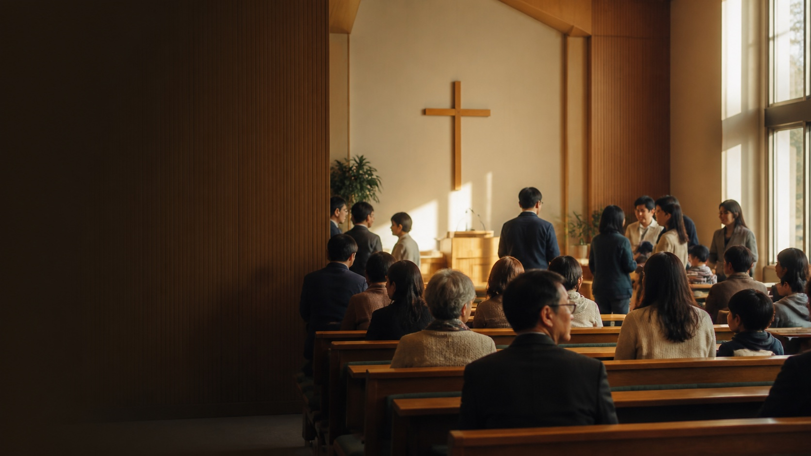

삶의 목적을 묻는 말씀
정답을 주입하기보다 하나님의 뜻을 함께 묻고 진지하게 대화합니다.

어떤 교회인가요? CONCEPT DEMOOUR HEART
글로벌교회는 삶의 목적과 하나님의 뜻을 함께 고민하고, 각 사람 안에 주신 비전을 세워가는 공동체를 꿈꿉니다.
완벽한 사람을 기다리지 않습니다. 질문이 있어도, 믿음이 아직 낯설어도 괜찮습니다. 하나님과 이웃을 알아가는 길을 함께 걷습니다.
교회 소개 자세히 보기정답을 주입하기보다 하나님의 뜻을 함께 묻고 진지하게 대화합니다.
서로의 속도와 질문을 존중하며 예배와 일상의 자리를 함께 나눕니다.
청소년과 청년이 자신의 부르심을 발견하고 삶으로 살아내도록 돕습니다.
주일예배
10:30어린이예배
4세–초등학생 · 꿈마루 1층청년예배
대학생·청년 · 지유쓰수요기도회
누구나 · 작은예배실 3층VISIT US
LATEST FROM GLOBAL
홈에서는 가장 최근 소식만 보여드려요.
지난 기록은 각 페이지에서 천천히 둘러보세요.